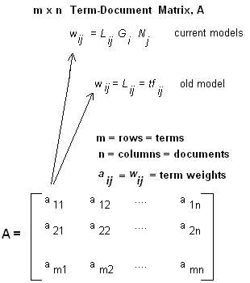
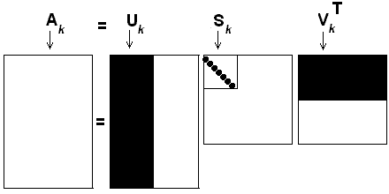

< Continued from Part 1: Undestanding LSI (tutorial, demo, code, references)
In the previous post we saw what LSI is and references to its tutorial. In this post, we will walk through the steps required for creating an index from the the list of text documents. In the code we are currently using one single directory to fetch all the plain text documents.
The steps below is a walkthrough and you should be able to find similar steps as comments in attached code.
Step 1 - Fetch contect from documents in a directory
Create a list of documents - List of valid file-names to be considered.
Mapping a numeric ID to the file name - numeric needed for calculations
Create a list of words
For each document
Read the words from document
Filter out the stop-words from a stopword list
For each word:
Apply stemming for each word using PorterStemmer algorithm (The Stemmer class transforms a word into its root form)
Add the stemmed-word to word list
Map a numeric word ID to the word - numeric needed for calculations
Create a Document - Word relation
DocumentID and WordID (integer)
Step 2 - Create a Term Document Matrix
i.e create the Word to Document matrix as shown below

(image taken from miislita.com, check references)
Step 3 - (Optional) Save the Term Document Matrix - this is good in a situation where you would want to use the matrix again and again when there are no changes to the documents
Step 4 - Calculate Term weights
Calculate the local term weights
Calculate the global term weights
Step 5 - Calculate the Normalization factors for documents (Code use cosine-normailization)
I remember that we could use other normalization techniques, but this one was used in this code. Understand the concepts - it's complicated but intriguing too
Step 6 - Generate the Weighted term document matrix
Step 7 - Compute SVD (singular value decomposition).
Fortunately, this is done by DotNetMatrix component - this saved a lot of time for me along with other matrix calculations (references at end of document)
Step 8 - Now we have U, S and V matrices from above. Calculate U(k) and S(k). K is the rank here and it is current user-provided. After applying rank-approximation we get what is referred to “reduced SVD”
As mentioned in the referenced articles: "We keep the first k columns of U, the first k rows of V(transpose) and the first k rows and columns of S; that is, the first k singular values. This removes noisy dimensions and exposes the effect of the largest k singular values on the original data."

(image taken from miislita.com, check references)
Rank Approximation is an important part of the process. A good value of K will determine the effectiveness of the index. Here we are manually providing it, but in real-world cases where people keep adding documents - this is not necessarily possible. There are some techniques like “pivot-based”, “neural-net” based, etc - but I’ll leave it to the reader to explore those further.
Step 9 - Calculate S(k)- inverse and U(k)
Step 10 - Save these calculations to a file “index.bin” for use while searching.
In the next part, we will see how to execute queries based on this Index.